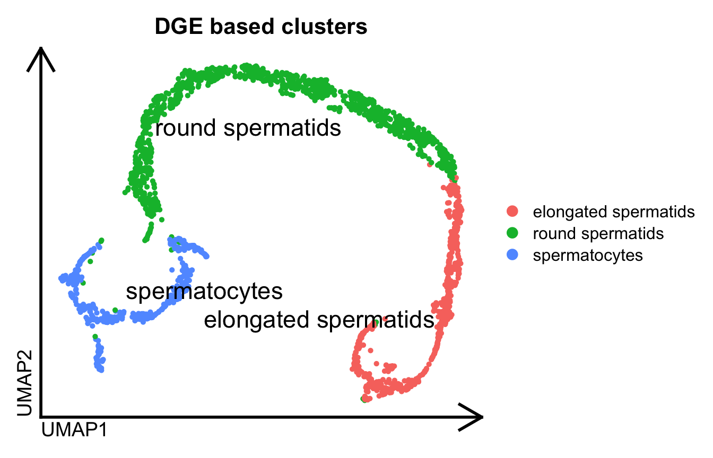
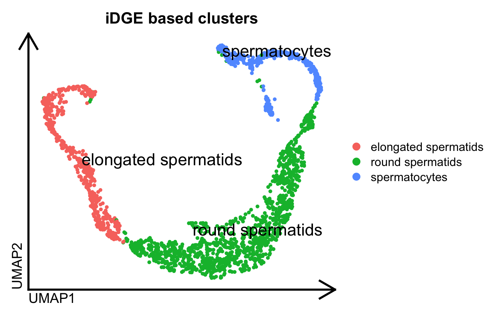
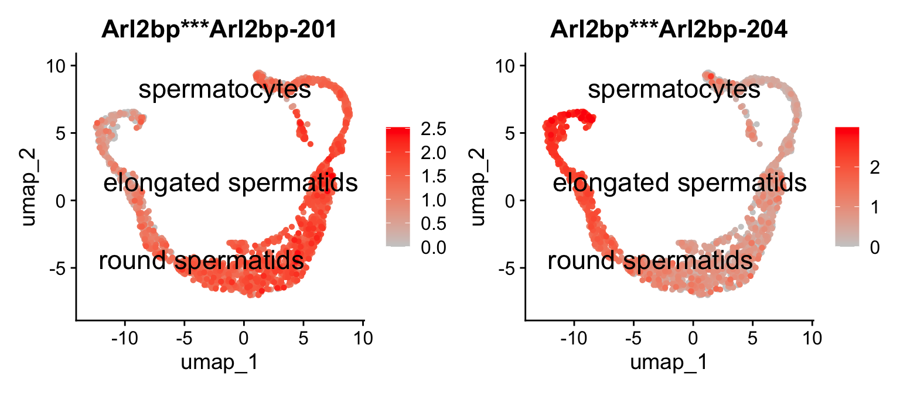
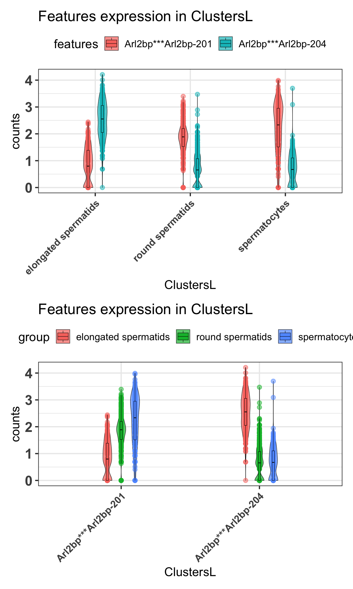
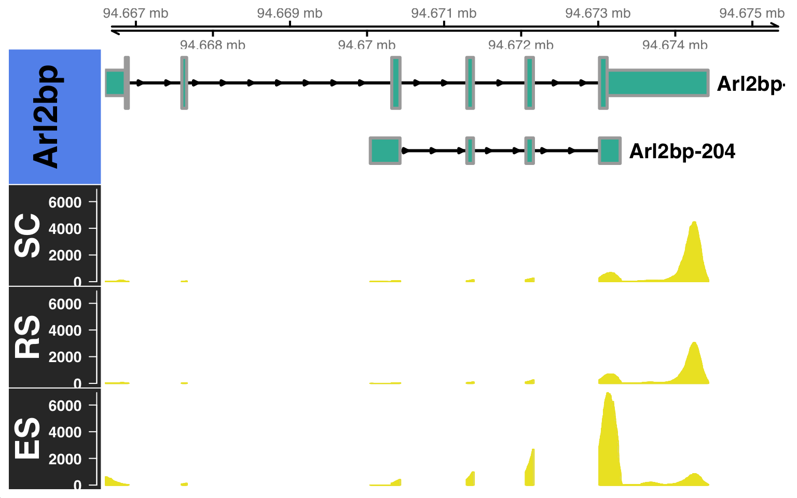
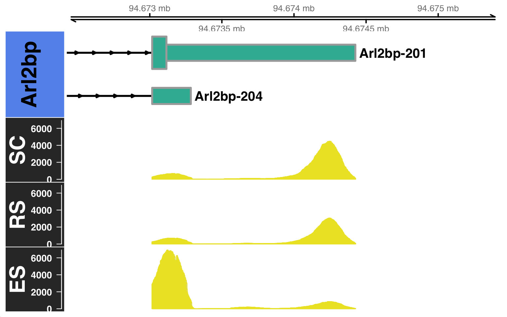
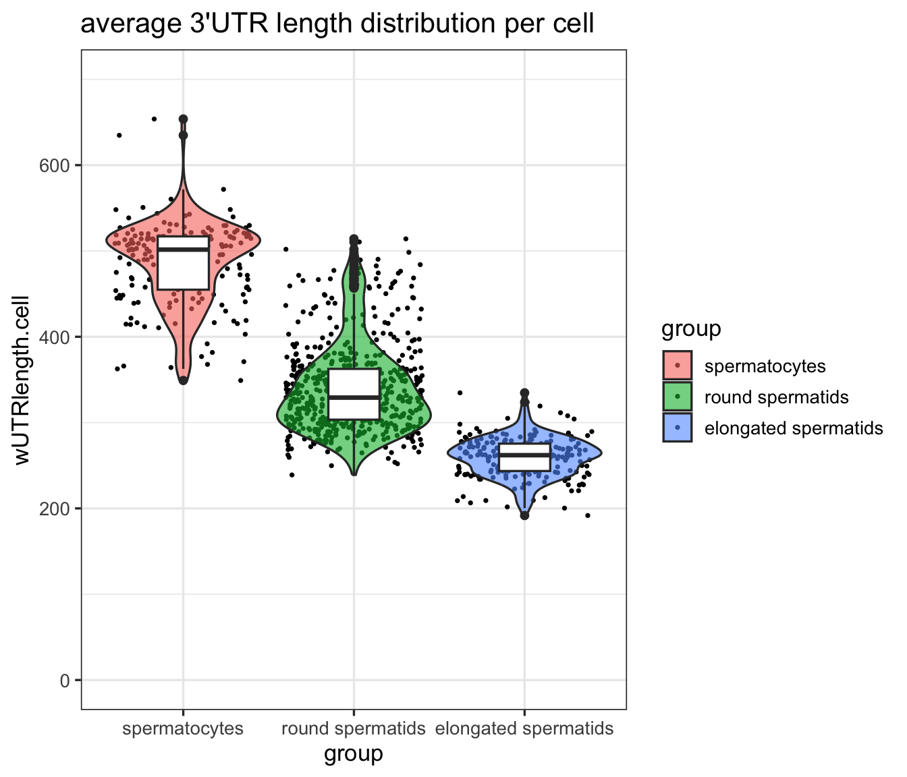

library(Seurat)
library(dplyr)
library(data.table)
library(stringr)
library(Gviz)
library(ggplot2)
library(ggthemes)
library(rtracklayer)
#load gene based analysis Seurat object
dge.obj = readRDS("./mouse_DGEobj.RDS")Downstream analysis on scRNA-seq from mouse spermatogenesis using SCALPEL
Note
Note: Install scalpelR for downstream analysis
For execution of several function used in this downstream analysis with SCALPEL, we will implemented the R package scalpelR that can be installed from its Github page as:
install.packages("devtools")
devtools::install_github("Franzx7/scalpelR")
library(scalpelR)1 Introduction
In this example, we performed both gene-level and isoform-level single-cell analysis on a 10X 3’ Chromium scRNA-seq dataset from mouse spermatogenesis. Using Seurat, we first conducted a standard single-cell gene-level analysis, which enabled the identification of distinct cell populations.
#Visualize gene based sc cells
Seurat::DimPlot(dge.obj, label=T, repel = T, pt.size = 1., label.size = 6, group.by="ClustersL") %>%
theme_umap() +
ggtitle("DGE based clusters")
Prior to obtaining these final clusters of populations, we performed some quality filtering steps to obtain this set of reliable cells. Using those same cell barcode tags, we executed SCALPEL on this 10X 3’ Chromium scRNA-seq dataset. All the information required to run SCALPEL can be found on its Github page.
Note
Note: SCALPEL requires the FASTQ and cellranger repository associated to each sample for its execution. For 10x Genomics experiments, the repository can be obtained using the CellRanger pipeline.
SCALPEL execution can be performed on a specific cell population using the - -barcodes argument option.
Following SCALPEL execution, a result folder is generated that contains all the information required to perform downstream analysis.
> tree -L 1 scalpel_output
scalpel_output
├── DIU_table.csv
├── iDGE_seurat.RDS
├── Runfiles
├── SRR6129050_APADGE.txt
├── SRR6129050_filtered.bam
├── SRR6129050_filtered.bam.bai
├── SRR6129050_seurat.RDS
├── SRR6129051_APADGE.txt
├── SRR6129051_filtered.bam
├── SRR6129051_filtered.bam.bai
└── SRR6129051_seurat.RDS
2 directories, 10 files2 Downstream analysis of SCALPEL results
2.1 Loading isoform based Seurat object
Let’s load the isoform-based Seurat object generated by SCALPEL using the reliable cell barcodes obtained from the gene-based analysis:
idge.obj = readRDS("./iDGE_seurat.RDS")2.2 Quality filtering on low expressed isoforms features
For this analysis, we already used a reliable set of cells obtained from the gene-based analysis. However, we can still perform some filtering steps to discard lowly expressed isoforms features that are not informative. For example, we can filter out isoforms that are detected in less than 3 cells or more:
# Filter out isoforms that are detected in less than 3 cells
idge.obj = subset(idge.obj, features = rownames(idge.obj)[Matrix::rowSums(idge.obj@assays$RNA@counts > 0) >= 3])2.3 Dimensionality reduction and clustering
Let’s perform the dimensionality reduction and clustering on this isoform-based Seurat object:
# Standard workflow for dimensionality reduction and clustering (Adjust the parameters)
idge.obj = NormalizeData(idge.obj)
# as isoform data is more sparse and noisy, we recommend to use a higher number of variable features
idge.obj = FindVariableFeatures(idge.obj, nfeatures = 6000)
idge.obj = ScaleData(idge.obj)
idge.obj = RunPCA(idge.obj, npcs = 50)
idge.obj = RunUMAP(idge.obj, dims = 1:9)
#Clustering
idge.obj = FindNeighbors(idge.obj, dims = 1:9)
idge.obj = FindClusters(idge.obj, resolution = 0.9)
idge.obj$ClustersL = idge.obj$seurat_clusters
Seurat::DimPlot(idge.obj, label=T, repel = T, pt.size = 1., label.size = 6, group.by="ClustersL") %>%
theme_umap() +
ggtitle("iDGE based clusters")
2.4 Differential isoform expression analysis
We can perform a differential isoform expression analysis between the different clusters obtained from the isoform-based analysis. For example, let’s perform a differential isoform expression analysis between the iPSC and NP cell populations:
diu.table = scalpelR::FindIsoforms(
seurat_obj = idge.obj,
group_by = "ClustersL",
assay="RNA",
threshold_pval = 0.05)Aggregating counts in conditions...Performing filtering and comparison test...print(diu.table) gene_tr gene_name transcript_name
<char> <char> <char>
1: 0610010F05Rik***0610010F05Rik-206 0610010F05Rik 0610010F05Rik-206
2: 0610010F05Rik***0610010F05Rik-207 0610010F05Rik 0610010F05Rik-207
3: 1110017D15Rik***1110017D15Rik-204 1110017D15Rik 1110017D15Rik-204
4: 1110017D15Rik***1110017D15Rik-207 1110017D15Rik 1110017D15Rik-207
5: 1110051M20Rik***1110051M20Rik-202 1110051M20Rik 1110051M20Rik-202
---
3699: Cbwd1***Cbwd1-205 Cbwd1 Cbwd1-205
3700: Snx25***Snx25-207 Snx25 Snx25-207
3701: Snx25***Snx25-209 Snx25 Snx25-209
3702: Rpl30***Rpl30-205 Rpl30 Rpl30-205
3703: Rpl30***Rpl30-206 Rpl30 Rpl30-206
elongated spermatids round spermatids spermatocytes p_value
<num> <num> <num> <num>
1: 53 321 230 0.0004997501
2: 296 1617 1752 0.0004997501
3: 7735 5588 1439 0.0004997501
4: 1393 839 170 0.0004997501
5: 156 1830 1771 0.0004997501
---
3699: 15 64 50 0.0264867566
3700: 8 112 217 0.0264867566
3701: 2 49 50 0.0264867566
3702: 729 1585 986 0.0269865067
3703: 4359 10751 6629 0.0269865067
statistic p_value_adjusted
<num> <num>
1: 20.175321 0.001281772
2: 20.175321 0.001281772
3: 32.597809 0.001281772
4: 32.597809 0.001281772
5: 1689.448209 0.001281772
---
3699: 8.127079 0.048844127
3700: 7.814133 0.048844127
3701: 7.814133 0.048844127
3702: 7.400461 0.049738836
3703: 7.400461 0.049738836We can visualize a particular gene expression, for example the gene Arl2bp, that have differentially expressed isoforms between the iPSC and NPC populations:
gene.tab = diu.table %>% dplyr::filter(gene_name == "Arl2bp")
print(gene.tab) gene_tr gene_name transcript_name elongated spermatids
<char> <char> <char> <num>
1: Arl2bp***Arl2bp-201 Arl2bp Arl2bp-201 1015
2: Arl2bp***Arl2bp-204 Arl2bp Arl2bp-204 8137
round spermatids spermatocytes p_value statistic p_value_adjusted
<num> <num> <num> <num> <num>
1: 8179 3673 0.0004997501 11576.09 0.001281772
2: 1957 544 0.0004997501 11576.09 0.0012817722.5 Visualization of isoform expression in cells
2.5.1 UMAP
We can visualize the expression of these differentially expressed isoforms in the cells using a UMAP plot using Seurat. For example, let’s visualize the expression of the two differentially expressed isoforms of the gene Arl2bp:
Idents(idge.obj) = idge.obj$ClustersL
Seurat::FeaturePlot(idge.obj,
features = gene.tab$gene_tr,
pt.size = 1,
label.size=6,
order=T,
label=T,
repel=T,
cols = c("gray80", "red"))
2.5.2 Violin plots
Aditionally, we can visualize the expression of these differentially expressed isoforms within the condition using violin plot as:
p1 = scalpelR::plotExpression(
seurat_obj = idge.obj,
features = gene.tab$gene_tr,
group_var = "ClustersL",
plot = "group") +
ggplot2::theme(axis.text.x = element_text(angle = 45, hjust = 1, size = 12))Using features as id variablesp2 = scalpelR::plotExpression(
seurat_obj = idge.obj,
features = gene.tab$gene_tr,
group_var = "ClustersL",
plot = "features") +
ggplot2::theme(axis.text.x = element_text(angle = 45, hjust = 1, size = 12))Using features as id variableslist(p1, p2) %>% patchwork::wrap_plots(ncol=1)
2.6 Visualization of read coverage on the genome
Furthermore, we can visualize the read coverage of these differentially expressed isoforms using the BAM files generated by SCALPEL. For example, let’s visualize the read coverage of the two differentially expressed isoforms of the gene Arl2bp.
As we used a curated set of cell barcodes from the gene-based analysis to run SCALPEL, the BAM files generated by SCALPEL already contains only the reads from those reliable cells. Therefore, we can directly use these filtered BAM files to visualize the read coverage of the differentially expressed isoforms. However, if you want to visualize the read coverage of a specific cell population, you can filter the BAM files using the cell barcodes associated to that population and scalpelR subsetBAM as:
es_barcodes = dplyr::filter(idge.obj[[]], ClustersL=="elongated spermatids") %>% rownames()
rs_barcodes = dplyr::filter(idge.obj[[]], ClustersL=="round spermatids") %>% rownames()
sc_barcodes = dplyr::filter(idge.obj[[]], ClustersL=="spermatocytes") %>% rownames()
#let's merge the SRR6129050 and SRR6129051 BAM files generated by SCALPEL
system("samtools merge -o SRR612905X.bam SRR6129050_filtered.bam SRR6129051_filtered.bam -@ 4")
# Filter BAM file to obtain reads from a specific cell population
#elongated spermatids population
scalpelR::subsetBAM(
bam_file = "./SRR612905X.bam",
barcodes = es_barcodes,
output_file = "./subset_es_filtered.bam",
tag = "CB",
cores = 4)
#round spermatids population
scalpelR::subsetBAM(
bam_file = "./SRR612905X.bam",
barcodes = rs_barcodes,
output_file = "./subset_rs_filtered.bam",
tag = "CB",
cores = 4)
#spermatocytes population
scalpelR::subsetBAM(
bam_file = "./SRR612905X.bam",
barcodes = sc_barcodes,
output_file = "./subset_sc_filtered.bam",
tag = "CB",
cores = 4)
#Plot coverage using the subset BAM files and GTF annotation reference
gtrack = rtracklayer::import("./gencode.vM21.annotation.gtf.gz")
scalpelR::CoveragePlot(
genome_gr = gtrack,
bamfiles = c("ES"="./subset_es_filtered.bam",
"RS"="./subset_rs_filtered.bam",
"SC"="./subset_rs_filtered.bam"),
gene_in = "Arl2bp",
genome_sp = "mm10")$`BAM file:`
SC RS
"./subset_sc_filtered.bam" "./subset_rs_filtered.bam"
ES
"./subset_es_filtered.bam"
$`Gene:`
[1] "Arl2bp"
$`Transcripts:`
[1] "Arl2bp-201" "Arl2bp-204"
$`Genome annotation org:`
[1] "mm10"Building Gene Track...Building Alignment Track...
By default, the CoveragePlot function will plot all the isoforms of the gene of interest. However, you can also specify a set of isoforms to plot using the features argument option. Furthermore, you can also specify the distance to zoom from the 3’UTR using the distZOOM argument option as:
$`BAM file:`
SC RS
"./subset_sc_filtered.bam" "./subset_rs_filtered.bam"
ES
"./subset_es_filtered.bam"
$`Gene:`
[1] "Arl2bp"
$`Transcripts:`
[1] "Arl2bp-201" "Arl2bp-204"
$`Genome annotation org:`
[1] "mm10"Building Gene Track...Building Alignment Track...
2.7 3’UTR length analysis in single-cells
Using the isoform quantification obtained from SCALPEL, and the genome annotation reference, we can estimate the 3’UTR length of each isoform in each cell. For this, we can use the function scalpelR::weightedUTR_cell as:
utr3length_tab = scalpelR::weightedUTR_cell(
seurat_obj = idge.obj,
annotation_gr = gtrack,
group.by = "ClustersL",
assay = "RNA") %>%
dplyr::mutate(group=factor(group,
levels=c("spermatocytes", "round spermatids", "elongated spermatids")))Processing annotation file...(1/3)Processing isoform expression...(2/3)Integrating Seurat metadata...(3/3)print(utr3length_tab %>% head(5)) cells group wUTRlength.cell
<char> <fctr> <num>
1: AAACCTGAGCTTATCG-1 round spermatids 297.6381
2: AAACCTGGTTGAGTTC-1 round spermatids 272.0769
3: AAACCTGTCAACGAAA-1 elongated spermatids 266.5414
4: AAACGGGCACAGGTTT-1 elongated spermatids 266.0703
5: AAACGGGTCATTTGGG-1 elongated spermatids 283.2235Then, based on this metric, we can visualize the 3’UTR length distribution in the different cell populations using plots as:
utr3length_tab %>%
ggplot2::ggplot(aes(x=group, y=wUTRlength.cell, fill=group)) +
geom_jitter(na.rm=T, size=.5) +
ggplot2::geom_violin(scale="width", trim=T, na.rm = T, alpha=.6) +
ggplot2::geom_boxplot(fill="white", width=.3) +
ggplot2::ylim(c(0,700)) +
ggplot2::ggtitle("average 3'UTR length distribution per cell") +
ggplot2::theme(title = element_text(size=9)) +
ggplot2::theme_bw(base_size = 13)
3 Further downstream analysis
Using the R Seurat Object generated by SCALPEL, you can perform further downstream analysis in the same way as a standard gene-based Seurat object. For example, you can perform trajectory analysis using Monocle3, etc…
For more information, please refer to the Seurat documentation here.